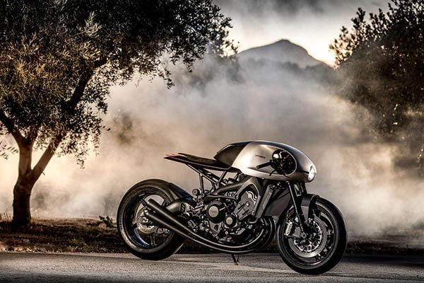

Yamaha have a long history of custom motorcycles through their Yard Built project, which spawned the XSR production bike series. Now they’ve teamed up with Southend-on-Sea builders Auto Fabrica to produce two of their wildest machines yet. To create the bikes, Auto Fabrica co-founders Gaz and Bujar Muharremi joined up up with designer friend Toby Mellor. They wanted to blur the lines between classic and modern style. They decided to make the first bike, the Type 11 Prototype One, a track-only machine, so they weren’t held back by road regulations.

Auto Fabrica stripped the stock XSR900 right back to the engine and frame, swapping the suspension for custom Öhlins, as well as adding Brembo calipers, PFM brake discs and BST carbon wheels.
The bodywork was hand-beaten and formed from sheet aluminium then finished with a flush-fit speedo and endurance-style quick-fill tank. The highlight really has to be the sand-bent three-into-three exhaust, which finishes off the classic racer style.
After producing the track-focused Prototype One, AutoFabrica made a road-going custom from a classic XS750, which then formed the basis of the Type 11 Prototype Two, a road-going XSR900 version of the Prototype One. Sticking with the same design philosophy and taking the same suspension, brakes and wheels as the track model, the Prototype Two adds a classic single round headlight, trimmed seat, indicators and road tyres. The handmade alloy bodywork remains but instead of the quick filler, there is a conventional fuel tank hiddenunderneath a lifting panel.
Antoin Clémont, Yamaha Europe Product Manager, said: “This went from a beautiful idea with a great bike to these stunning creations that perform beautifully.” The bikes will be on show at the Bike Shed Show in London, from May 25-27. The road-going Prototype Two will be supplied by Auto Fabrica in a limited run with the first deliveries expected by Autumn 2018. But Yamaha say it could cost as much as £68k.